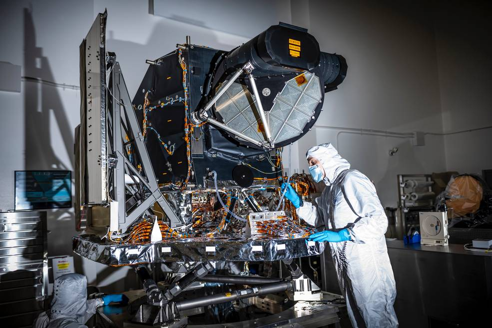

Welcome to GIS in Space

In this site you will learn about some of the top missions set up by NASA using the help of advanced GIS technologies. From sending and recieving data from space, spatial analysis is conducted on various exoplanets' surfaces and helps scientists and engineers. This access to spatial data helps with space missions to study areas of the Moon's untouched surfaces and ranges to searching for the next habitable planet and with the help of some analysis can possibly lead to Mars.
| Top 4 Space Missions |
|---|
| Blue Ghost Mission I |
| Mars Reconnaissance Orbiter |
| Landsat 9 |
| Mars Odyssey |
Spacecrafts Utilized
Firefly Aerospace Blue Ghost
Placed on the mission known as "Ghost Riders in the Sky", launched January 15, 2025.
Mars Reconnaissance Orbiter
Known as the MRO, created by NASA and launched in 2006

Landsat 9
Designed and built by Northrop Grumman, launched on September 27, 2021.
Mars Odyssey
Originially named the Mars Surveyor 2001 Orbiter, NASA spacecraft that launched on April 7, 2001